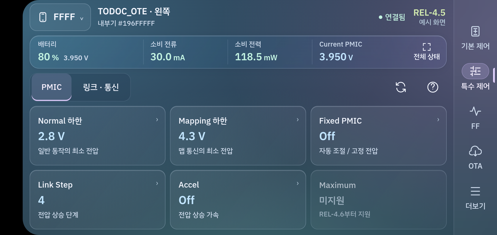
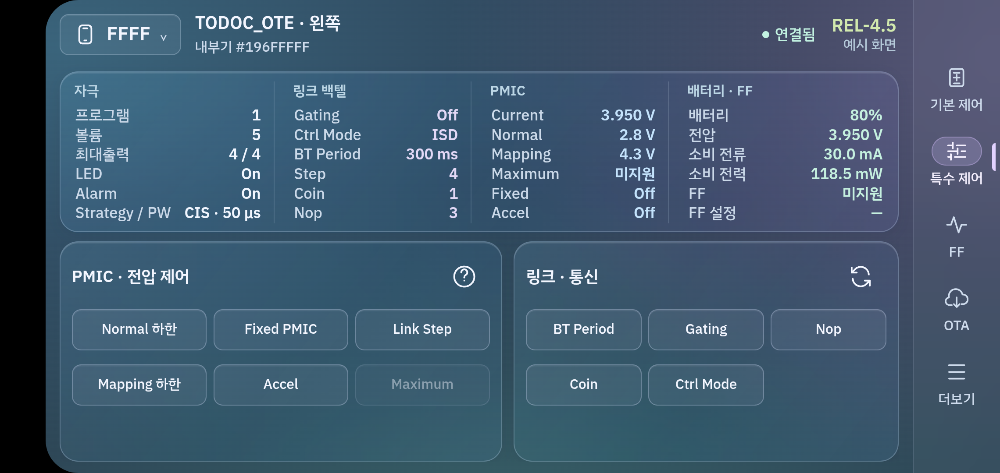
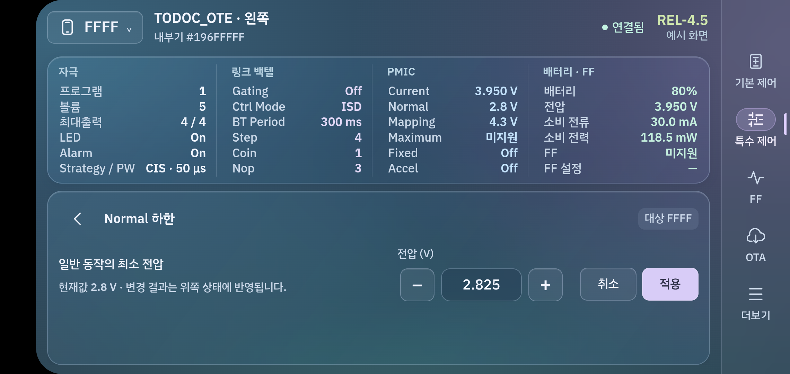
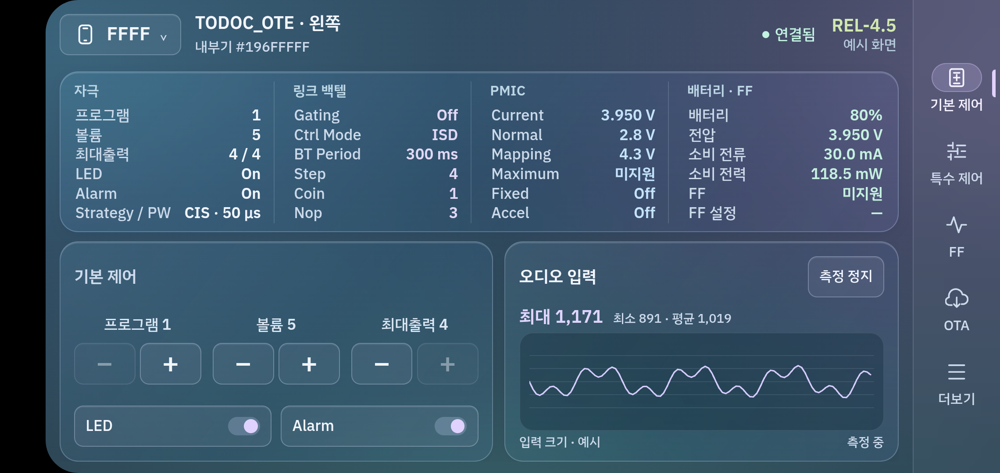
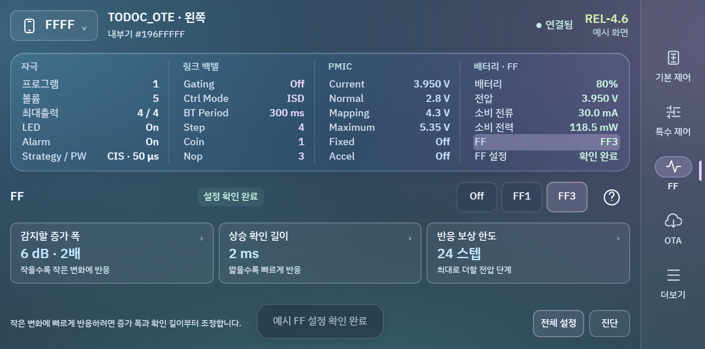
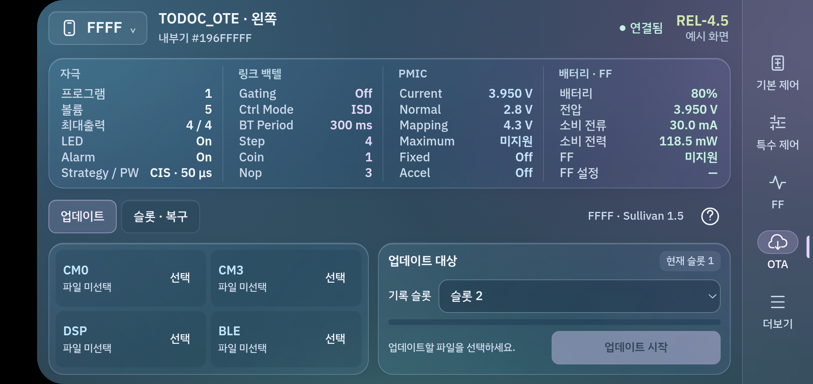
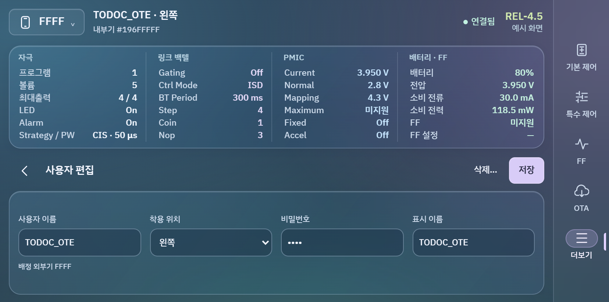

01 / 상태 확인
숨어 있는 정보 없이, 같은 자리에서 읽습니다.
네 그룹에 여섯 행씩 정렬했습니다. 라벨과 값 모두12px로 맞추고, 색은 그룹을 구분하는 정도로 사용합니다. 상태표는 높이140px, 아래 조작 공간은191px입니다.
전체 상태 버튼과 가로 스크롤을 제거했습니다. 메뉴를 바꾸거나 설정을 편집해도 상태표 위치가 유지됩니다.
전체 상태를 열어야 확인할 수 있던 구조를 없앴습니다. 위쪽에서 현재 상태를 계속 읽고, 아래쪽의 작은 버튼으로 설정합니다. 설정을 편집할 때도 상태표를 가리지 않습니다.
특수 제어의 Normal 하한을 누르고 ±로 변경해보세요. 위쪽 현재값은 적용하기 전까지 유지됩니다. FF3 예시는 REL-4.6에서 설정 확인 후 선택합니다.
갤러리는 화면 비율에 맞춰 확대·축소합니다. 실제 휴대전화의 카메라 안전 영역을 제외한 크기로 구성했습니다. 이미지를 누르면 원본 크기로 볼 수 있습니다.



네 그룹에 여섯 행씩 정렬했습니다. 라벨과 값 모두12px로 맞추고, 색은 그룹을 구분하는 정도로 사용합니다. 상태표는 높이140px, 아래 조작 공간은191px입니다.
전체 상태 버튼과 가로 스크롤을 제거했습니다. 메뉴를 바꾸거나 설정을 편집해도 상태표 위치가 유지됩니다.
일반 제어 버튼의 보이는 면은36px입니다. 주 조작의 실제 터치 영역은44px로 두고, 같은 설정값을 큰 버튼 안에 반복하지 않습니다.
기본 제어의 ±와 특수 제어 버튼을 축소했습니다. 설정 설명은 편집기에 두고, 기본 ± 근처에는 현재값을 짧게 덧붙였습니다.
숫자 설정은 키보드 대신 ±, On/Off는 바로 보이는 선택 버튼으로 바꿨습니다. 키보드가 상태표를 덮지 않습니다.
적용 전 상단 값은 유지. 적용 후 변경한 행을 잠깐 강조합니다. 등록 이름처럼 문자를 입력하는 화면에서만 Android 키보드를 사용합니다.
기본 제어·오디오·특수 제어·설정 편집의 상단 여백과 제목 영역을 통일했습니다. 작은 버튼에서도 글자가 가운데 놓이도록 맞췄습니다.
외관 크기와 터치 영역을 분리해 크기·정렬을 점검했습니다. 설정 편집의 ±도44px 터치 영역을 확보했습니다.




연결 휴대전화의2280×1080 출력에서 카메라 안전 영역을 제외한 약828×411 논리 크기를 기준으로 만들었습니다.26개 렌더·흐름 기록에서 가로 넘침, 상태 라벨·값 겹침, 의도하지 않은 핵심 화면 스크롤을 확인했습니다.24개 상태 유지, 초안 취소, 적용·재진입 값 유지, FF 확인 절차와 OTA 준비 흐름도 검사합니다.
주 조작 터치 영역은44px이며 일부 보조 버튼은36~40px입니다. 버튼 외관36px와 터치 영역은 서로 다른 측정치입니다. 전체 접근성 기준 충족을 뜻하지 않습니다. 긴 목록·로그와 키보드 중 폼은 내용에 따라 세로 스크롤합니다.
debug 빌드에 포함해 기존 앱 데이터를 유지한 채 설치했습니다. 실제 BLE 제어·초기화·제조번호/키 쓰기·OTA 전송은 이번 디자인 검증에 포함하지 않습니다.
최신 렌더·흐름 결과 · 갤러리 검사 · 작업 기록 · 직전 축약 상태 시안